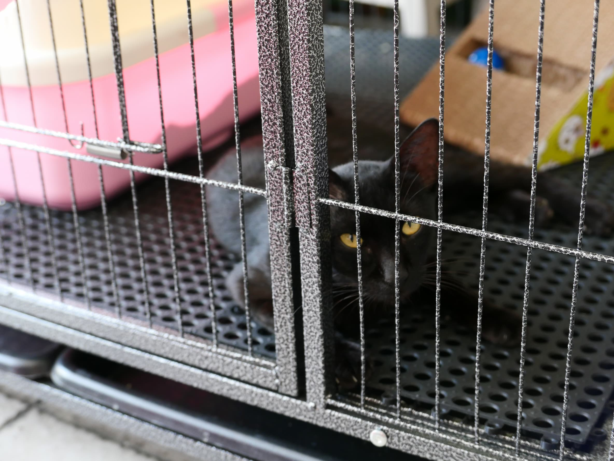
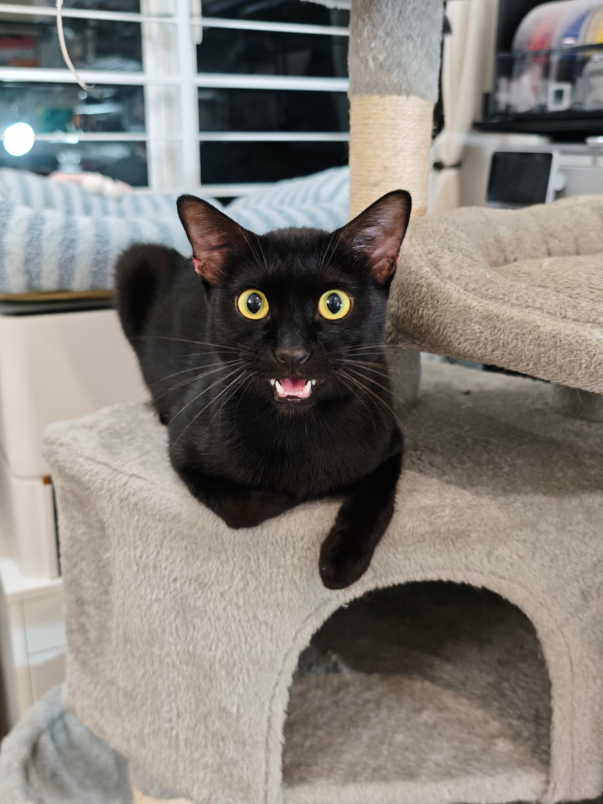
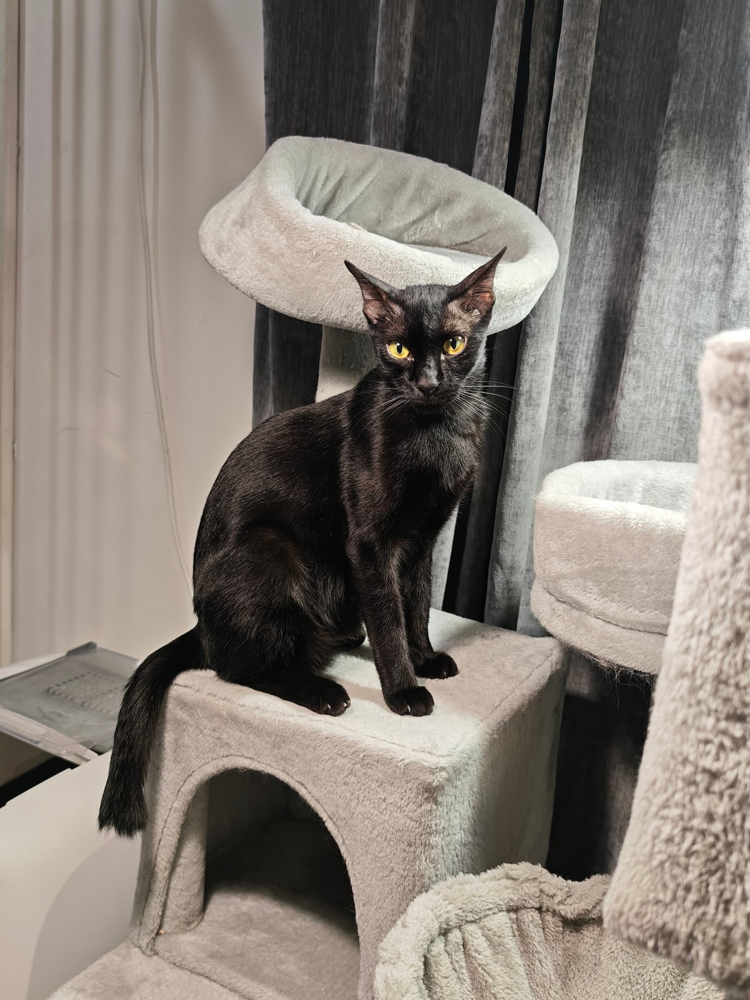
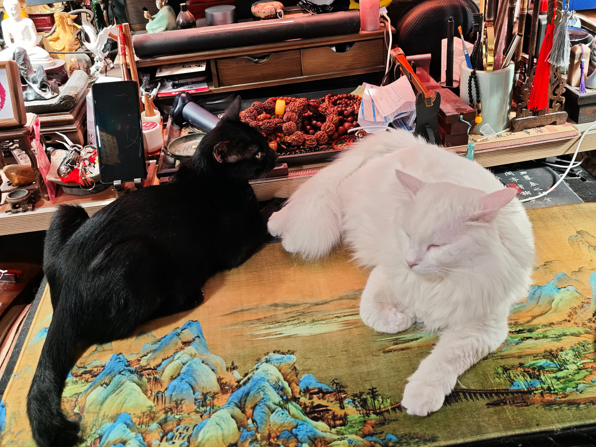
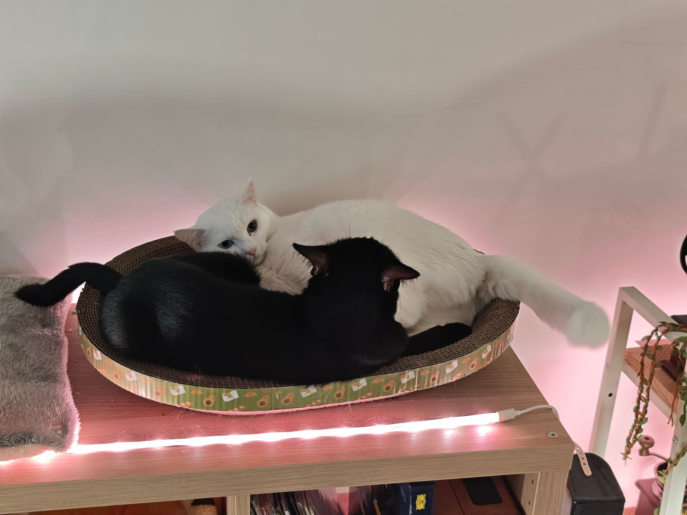

2025年农历新年，小黑出现在我们门口。
我好心喂了他，没想到喂了没多久，他就在门口大呕吐。我们马上带他去看兽医。
就是那一次兽医检查，让我们决定收养他。
有时候，一场呕吐就是缘分的开始。
小黑收养后，我们把他养在笼子里观察。
不是因为他不信任我们——其实他很快就信任了。但他的肠胃一直不稳定，需要持续观察。加上那时候其他猫咪还没有全屋自由活动，需要慢慢整合。
小黑在笼子里待了半年，从来没有抱怨。黄绿色的眼睛透过铁栏杆看着我们，安静，温顺，乖得让人心疼。

终于有一天，我们让小黑进入楼上的独立房间——和其他猫咪隔离，怕他们起冲突。
没想到傻猪第一个跑过来，隔着铁栏杆好奇地盯着小黑看。
隔天，我们打开门，他们已经变成了玩伴。
我们都觉得不可思议。一黑一白，一个傲娇异瞳仙猫，一个新来的流浪黑猫——就这样，成了最好的朋友。


小黑和傻猪成了最好的玩伴。
一黑一白，整天在家里追来追去。傻猪那只平时傲娇的异瞳仙猫，遇到小黑就变成了另一只猫——活泼，好奇，充满孩子气。
他们也最爱并排躺着，一黑一白，像太极的阴阳——你中有我，我中有你。

小白离世一个月后，小黑突然不吃不喝，开始呕吐。
我们带他去看兽医。检查发现他肠道里有一个大球状物，情况严重，需要手术才能知道里面是什么。
我们决定做手术。但手术出现了并发症——小黑走了。
同一年，我们失去了小白，又失去了小黑。一个月之内，两只猫。
后来我们发现，兽医给小黑开的处方猫粮，无意中医好了困扰傻猪已久的软便问题。小黑的处方，成了傻猪的礼物。
「祸兮福之所倚，福兮祸之所伏」
小黑来了，带来了欢笑。
小黑走了，留下了傻猪的健康。
来去之间，皆是缘分，皆是礼物。
